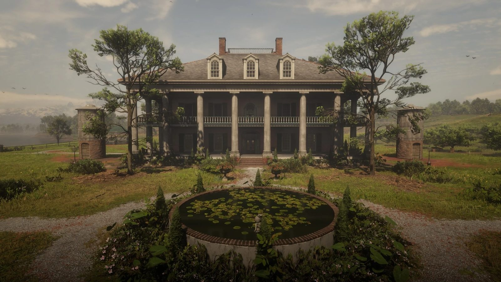
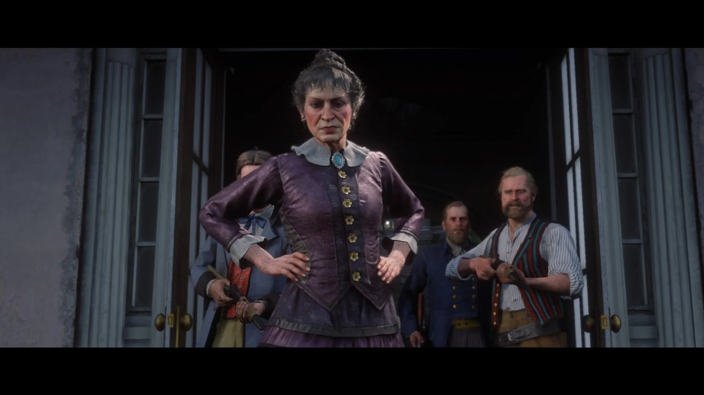
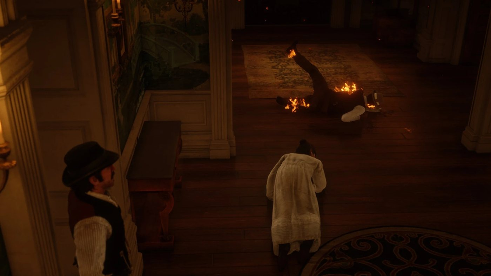

Character · Lemoyne
Catherine Braithwaite
Catherine Braithwaite is the head of the Braithwaite family, owners of Braithwaite Manor in Scarlett Meadows, in Red Dead Redemption 2 (2018), set in 1899. Her family sells moonshine and has long feuded with the Grays of Caliga Hall. In chapter 3 the Van der Linde gang works for both families: Hosea Matthews and Arthur Morgan do jobs for her while the gang steals her horses for Tavish Gray. Her men then kidnap Jack Marston. The gang storms the manor and sets it on fire, and she reveals that her sons gave the boy to Angelo Bronte. Left alive, she runs back into the burning house and dies there.
She is played by Ellen Harvey.
- Name
- Catherine Braithwaite
- Also called
- Mrs. Braithwaite; Momma (one of her sons); Aunt Catherine (Penelope Braithwaite)
- Born
- Not given in the game
- Died
- 1899, at Braithwaite Manor, after running back into the burning house in "Blood Feuds, Ancient and Modern"
- Status
- Deceased
- Nationality
- American
- Residence
- Braithwaite Manor, Scarlett Meadows, Lemoyne
- Occupation
- Head of the Braithwaite family; plantation owner and moonshine seller
- Family
- Sons Bartholomew, Gareth and Gerald; a daughter, Gertrude according to the Red Dead Wiki; niece Penelope
- Associate
- Angelo Bronte, her customer for five years according to her letter
- Enemies
- The Gray family of Tavish Gray; the Van der Linde gang
- Games
- Red Dead Redemption 2 (mentioned in Red Dead Online)
- Played by
- Ellen Harvey
Biography
Origins
The games give no date or place of birth for Catherine Braithwaite. In 1899 she is the head of the Braithwaite family and its oldest living member. The family owns Braithwaite Manor, a plantation house by the water in Scarlett Meadows, in the state of Lemoyne, outside the town of Rhodes. Catherine has three sons, Bartholomew, Gareth and Gerald, and a daughter. Her niece Penelope also lives on the estate and calls her Aunt Catherine. No husband is named or seen. The Red Dead Wiki describes the family as American, of British descent.
The daughter is never shown in the story missions. Beau Gray tells Arthur that Catherine has a daughter nobody has seen for years, and that she was not right. According to the Red Dead Wiki, her name is Gertrude and it appears only in the credits; the wiki adds that the family keeps her locked in an outhouse on the estate so as not to damage its name. A photograph kept in the manor shows, according to the wiki, Catherine, Gertrude and the sons posing with the family's Black servants.
The Braithwaites are locked in a long feud with the Grays of Caliga Hall, the other old plantation family of the area. The Grays hold the law in Rhodes through Sheriff Leigh Gray and own the town's saloon. Josiah Trelawny tells Dutch van der Linde that the two families have been fighting over Confederate gold and marriages. The Rhodes deputy Archibald MacGregor tells Arthur that each family believes the other stole a fortune from it long ago, and that he cannot say whether the story is true. The Red Dead Wiki dates the feud to 1806, when Lucille Braithwaite let Douglas Gray take her family's hidden gold. He used it, with gold taken from the Grays, to finance abolitionists.
According to Archibald, the family grew cotton, lost its fortune when the labor laws changed and turned to moonshine. The law keeps finding the family's stills all over Lemoyne. He adds that the Braithwaites are in business with the Lemoyne Raiders.
Catherine also does business with Angelo Bronte, the crime boss of Saint Denis. A letter she wrote to him lies on a nightstand in the manor. It opens with "Dear Signor Bronte" and answers a message he sent the week before. Catherine writes that "our two proud and ancient families, have worked together successfully for five years now", that the Braithwaites "have always provided a quality product and paid our debts", and that he has been "the most valued of customer". She mentions "a small cash flow problem, and a minor disruption in supply" and asks him not to end the arrangement. She promises: "We will cover our debts shortly, I assure you of that. I agree that they have grown bigger, but we will pay the interest within the quarter." She adds: "My spendthrift middle son has reformed his ways." The supply problem, she writes, has been "resolved entirely". The letter stops after the word "Furthermore" and does not name the son.
Red Dead Redemption 2 (1899)
Chapter 3: Clemens Point
After the move to Clemens Point, near Rhodes, Dutch decides to exploit the feud and gives the Braithwaites to Hosea Matthews to work on. In "American Distillation", Sheriff Gray makes Dutch, Arthur Morgan and Bill Williamson temporary deputies to shut down a Braithwaite moonshine still in the swamp; the buyers who turn up are Lemoyne Raiders. Archibald MacGregor hands most of the seized liquor to the gang.
In "Advertising, The New American Art", Hosea and Arthur drive the moonshine to Braithwaite Manor. A guard lets them drive up to the house. Catherine meets them in front of the house and says she is not about to buy what already belongs to her. She sells it at a dollar a bottle, and Hosea asks for fifty cents a bottle as a reward for finding it. Armed men come out of the house, and one of her sons warns Hosea that the alternative is getting shot; according to the Red Dead Wiki, this is Bartholomew, holding a shotgun. Catherine laughs and has the two men paid. When Hosea hints that they acted on someone's orders, she says she knows that old Sheriff Gray sent them. She then decides she does not want the liquor back. She offers ten dollars more for the two men to give it away for free in the Rhodes saloon run by the Grays, which she calls a promotional expense, and invites them to come back for a game of cribbage.
Hosea and Arthur pour free drinks until a group of Lemoyne Raiders arrives, angry to find the liquor they were due to buy being given away. The two men shoot their way out and escape by wagon. Once clear of the town, Arthur asks whether Catherine set them up; Hosea does not think so, but is not sure. He rides back to the manor to bring her some of the moonshine as a peace offering. At camp, Dutch and Micah Bell explain the plan to Arthur: convince each family that the gang is on its side, rob them both and be gone before they understand. Dutch works the Grays and Hosea the Braithwaites, and Dutch has sent Sean MacGuire to the manor as well.
In "The Fine Joys of Tobacco", a doorman shows Arthur into the manor, where Catherine is playing cribbage with Hosea and Sean while one of her sons looks on. Catherine asks Hosea whether Arthur is as big and as stupid as he looks. Hosea answers with a joke at Arthur's expense, then raises the question of payment for the job at Caliga Hall; Catherine laughs and says the family has money. When the son insults Hosea, Hosea replies with a jibe about Catherine's children (see Quotes). The job is to burn the Grays' tobacco fields with the rest of the moonshine. According to Sean, Catherine points out that there has been no rain for weeks and finds the use of the liquor fitting. On the road, Sean tells Arthur that keeping quiet in front of her and her son took everything he had. That night the two men set the fields and a barn on fire and ride off with a payroll from a supply wagon.
The gang works the other side at the same time. In "Horse Flesh for Dinner", Tavish Gray receives Arthur, John Marston and Javier Escuella at Caliga Hall. He blames Catherine and her sons for ruining the county and for killing his uncle, and asks the three men to steal the Braithwaites' prized horses, which he says will fetch 5,000 dollars. On the ride over, Arthur tells John that he should see the Braithwaite woman. At the south gate of the manor, John tells a guard that they have an appointment about a large investment in the stables. The three men take three horses and fight their way off the estate. The fence Clay Davies, at Clemens Cove, pays only 700 dollars for them.
The scheme falls apart in Rhodes. On the way to a job offered by the Grays in "A Short Walk in a Pretty Town", Bill says the Grays believe the Braithwaites burned their fields; the job is an ambush, and Sean is killed. When Arthur gets back to Clemens Point, Abigail Marston is looking for her son Jack, aged about four. The kidnapping is never shown. Hosea says that they think the Braithwaite woman took him, because Kieran Duffy saw a couple of men who sounded like Braithwaite boys. Hosea adds that the family must have worked out what the gang was doing, and the gang links the kidnapping to the theft of the horses. Kieran's apology to Abigail is told under Relationships.
In "Blood Feuds, Ancient and Modern", Dutch rides to Braithwaite Manor with Arthur, Hosea, John, Charles Smith, Bill, Javier and Lenny Summers, leaving Micah and Kieran to guard the camp. On the way, Hosea admits that he no longer believes in the family gold. Dutch calls the family out of the house, and one of her sons tells the gang to get off their land (Bartholomew, according to the Red Dead Wiki). Armed men then come out of the house and a gunfight starts; according to the Red Dead Wiki, they include cousins and hired guns. Dutch, Arthur, John and Hosea go inside looking for Jack and for Catherine, and find an upstairs room barricaded from within. Arthur goes back out to fight off reinforcements, then helps John break down the door. Catherine is inside with her sons. According to the mission page, two of them are killed when the room is stormed (Gareth and Gerald).
Dutch and Hosea question Catherine about Jack. She insults them, says that her family never had any trouble except from Yankees, and accuses them of killing her sons; she does not say where the boy is. Dutch then shoots one of her sons in front of her; according to the mission page, this son is still barely alive. She screams. Dutch drags her off the stairs while Hosea and John set the house on fire; the search has found no trace of Jack. Dutch carries her out over his shoulder, sets her down in front of the burning house and holds his gun to her head. When Hosea asks why she took a child, she answers that the gang stole her liquor and her horses, and that there are no rules in war. She then says that her sons gave Jack to Angelo Bronte, and that the boy is either in Saint Denis or on the boat to Italy. Dutch tells the others to leave her. As the gang walks away, Catherine runs back into the burning manor, where she dies.
The mission leads straight into "The Battle of Shady Belle". The next morning, at Clemens Point, Arthur tells Dutch that the gang killed all those people and stirred up all that trouble for nothing. The Pinkerton agents Andrew Milton and Edgar Ross then walk into camp, and the gang moves to Shady Belle, an abandoned plantation house near Saint Denis.
Chapter 4: Saint Denis
In "Angelo Bronte, A Man of Honor", Bronte agrees to return Jack once Arthur and John have cleared the Saint Denis cemetery of grave robbers. On the way, Arthur guesses that the Braithwaites meant to hold Jack for ransom and sent him to Bronte to keep him out of the gang's reach. With the family gone and nobody left to pay, he reasons, Bronte has no further use for the boy. Jack is handed back unharmed. The burned manor can be visited from this chapter on. According to the Red Dead Wiki, armed survivors of the family still guard the grounds until the end of chapter 6 and are not replaced once killed. Catherine's charred body lies near what used to be the front entrance; nothing but the name shown on the body identifies her.
Chapter 6: Beaver Hollow
Penelope outlives her aunt. In "The Course of True Love V", she writes to Arthur that her family is keeping her prisoner on the plantation and threatening to send her away to stop her suffrage work; Arthur finds her at the workers' cabins on the plantation. On the ride to Rhodes station, she mentions the business with her Aunt Catherine and her cousins, and says that everyone left alive is angrier than before. Beau Gray, Tavish's son, is waiting at the station, and the couple leaves by train. Braithwaite riders chase the train because Penelope has taken the family's jewels, and Arthur fights them off before the couple sets out by coach for Boston.
According to the Red Dead Wiki, Arthur can stop on the way at the outhouse where Gertrude is kept. Penelope then explains that her cousin is mentally ill and that the family chose to keep her on the property rather than send her to a sanatorium, and says she will do what she can for her from Boston. Arthur can also come across the outhouse on his own; his journal entry on the discovery is given under Quotes.
Red Dead Redemption 2: the epilogue (1907)
By 1907, according to the Red Dead Wiki, the family seems to have died out at the manor. The ruins are overgrown, the guards are gone, and a small fishing community has settled by the old docks. Gertrude's remains are still inside the outhouse. In Rhodes, Sheriff Harmon Thomas, elected after Leigh Gray's death, has promised to rid the town of the influence of both families, the wiki adds. Simon Pearson, who now runs the general store in Rhodes, tells John that people in town still talk about how the Grays and the Braithwaites met their end (see Quotes).
Personality
Rockstar's character descriptions of September 2018 cover the Van der Linde gang and do not include her. In "American Distillation", the deputy Archibald MacGregor tells Arthur that her taste for thoroughbred horses costs a great deal (see Quotes). Dutch sums up the family as "Moonshiners... hypocritical". Tavish Gray calls her a hag and her sons inbred (see Quotes). Sean MacGuire insults her at length after the cribbage meeting.
When one of her sons threatens Hosea, she laughs and says "Pay the man". When a son protests, she answers "Hush now". She calls the gang "Yankees" twice during the raid on her manor.
In her own words
- "I ain't in the market for what's already mine." (to Hosea, who offers to sell her back her moonshine)
- "Oh, I know exactly who gave you your orders. Old Sheriff Gray."
- "So this one... he as big and as dumb as he looks?" (on meeting Arthur at the cribbage table)
- "We have lived in this house for a hundred and twenty years. We never had no problems 'cept for Yankees."
- "Oh, I know your type. Common scum." (to Dutch)
- "You filth." (to Dutch, who asks her where the boy is)
- "You stole my liquor. You stole my horses. Ain't no rules in war, Mr..." (to Hosea, who tells her that boys are off limits)
Names
The guard at the gate introduces her as "Mrs. Catherine Braithwaite", and Hosea calls her Mrs. Braithwaite. One of her sons calls her "Momma". After the saloon job, Hosea calls her "old Ma Braithwaite". Dutch calls her "old woman" and "hag", a word Sean and Tavish Gray also use. Her niece Penelope speaks of her as "Aunt Catherine". The gang usually refers to her as the Braithwaite woman.
Appearance
She is an elderly woman with dark gray hair gathered in a bun. At the manor she wears a purple dress with a wide gray collar, fastened at the throat by a brooch set with a blue stone. During the raid on the manor she is in a cream nightgown.
Relationships

Hosea Matthews
Dutch gives Hosea the Braithwaites to work on. He sells her back her own moonshine, plays cribbage with her and answers her jibe about Arthur with a joke of his own, then questions her outside the burning house (see Biography). Hosea mocks her as the fire spreads, and calls her crazy before the gang rides off.

Dutch van der Linde
Dutch plans to play the Braithwaites and the Grays against each other and leaves the Braithwaites to Hosea. After Jack's kidnapping he leads the assault on the manor, shoots one of her sons in front of her, drags her from the stairs and carries her outside (see Biography). He threatens her and insults her; she calls him a damn Yankee.

Arthur Morgan
Arthur brings her the moonshine with Hosea, burns the Grays' fields on her behalf, steals her horses for Tavish Gray and breaks into the room where she hides with her sons (see Biography). At their second meeting she asks whether he is as dumb as he looks (see In her own words).

Sean MacGuire
Sean sits in on the cribbage meeting and keeps quiet. On the way to Caliga Hall he tells Arthur how much he disliked her and her son (see Biography). Once the fields are on fire, he says she got her money's worth.

Jack Marston
Her men take the boy from the gang's camp at Clemens Point, and her sons hand him over to Angelo Bronte (see Biography). Jack is not at the manor when the gang storms it.

John Marston
Jack's father steals her horses with Arthur and Javier, then takes part in the assault on the manor to get his son back (see Biography).

Abigail Marston
Jack's mother stays at camp while the gang rides to Braithwaite Manor (see Biography).

Javier Escuella
Javier helps steal her prized horses for Tavish Gray, and rides to the manor for the assault (see Biography).

Kieran Duffy
Kieran is the one who saw the men Hosea links to the kidnapping (see Biography). At Shady Belle he apologizes to Abigail: he saw the Braithwaites come to camp but, knowing that Arthur and Hosea had dealings with them, did not think they would take Jack.

Angelo Bronte
The Saint Denis crime lord has been doing business with her family for five years, according to her letter to him. Her sons hand Jack over to him, and she gives his name to the gang (see Biography).

Tavish Gray
The head of the rival Gray family hires Arthur, John and Javier to steal her horses. He tells them that she and her sons have ruined the county and killed his uncle.
Leigh Gray
The sheriff of Rhodes deputizes Dutch, Arthur and Bill to shut down one of her stills. She knows he was behind the raid that left the gang with her moonshine (see Biography and In her own words).
Bartholomew Braithwaite
According to the Red Dead Wiki, he is the son who points a shotgun at Hosea and Arthur until she has them paid, the one who insults Hosea at the cribbage meeting, and the one who tells the gang to get off the family's land when the assault begins (see Biography). He also appears in Red Dead Online (see Other media).
Gareth and Gerald Braithwaite
According to the Red Dead Wiki, her two other sons stand with her when Hosea and Arthur first ride in. During the assault they barricade themselves upstairs with her; according to the mission page, both die in that room (see Biography).
Gertrude Braithwaite
Her daughter never appears in the story missions. The Red Dead Wiki names her Gertrude (see Biography).
Penelope Braithwaite
Her niece loves Beau Gray, from the rival family, and elopes with him in chapter 6 with Arthur's help (see Biography).
The Braithwaite estate
The manor
Braithwaite Manor stands in Scarlett Meadows, in Lemoyne, on a plantation of corn, tobacco and cotton fields with stables, workers' cabins, boathouses and a gazebo by the water. Armed men guard the gate and patrol the grounds. The family's money comes from moonshine; the stills, the buyers and the trade with Angelo Bronte are told in the Biography, as is the fate of the grounds after the fire.
Horses
The family's prized horses are kept in the stables south of the manor. In "Horse Flesh for Dinner", the stable hand presents three studs by name: Cerberus, Old Faithful and Old Father Time. According to the mission page, the horses the gang steals carry the Braithwaite brand on their hindquarters.
Missions
Catherine Braithwaite appears in three missions of Red Dead Redemption 2, all in chapter 3. Other missions take place on her land, bring up her family or deal with what follows her death; they are listed in the second table. The events themselves are told in the Biography.
Appearances
| Mission | Chapter | Catherine's role |
|---|---|---|
| Advertising, The New American Art | 3. Clemens Point | Pays Hosea and Arthur for her own stolen moonshine, then ten dollars more to give it away in the Grays' saloon in Rhodes. |
| The Fine Joys of Tobacco | 3. Clemens Point | Plays cribbage with Hosea and Sean and hires Arthur and Sean to burn the Grays' tobacco fields at Caliga Hall. |
| Blood Feuds, Ancient and Modern | 3. Clemens Point | Loses her sons and her house to Dutch's gang, reveals that her sons gave Jack to Angelo Bronte and runs back into the burning manor. |
Other missions linked to Catherine
| Mission | Chapter | Link with Catherine |
|---|---|---|
| The New South | 3. Clemens Point | Dutch gives Hosea the Braithwaites to work on. |
| American Distillation | 3. Clemens Point | Arthur, Dutch and Bill destroy a Braithwaite still and keep the moonshine. |
| The Course of True Love II | 3. Clemens Point | Arthur slips onto the Braithwaite estate to deliver Beau Gray's letter to her niece Penelope. |
| Horse Flesh for Dinner | 3. Clemens Point | Arthur, John and Javier steal her prized horses for Tavish Gray. |
| A Short Walk in a Pretty Town | 3. Clemens Point | Sean is killed in a Gray ambush in Rhodes; back at camp, Jack has disappeared. |
| The Battle of Shady Belle | 3. Clemens Point | Opens at Clemens Point the morning after the raid on her manor. |
| Angelo Bronte, A Man of Honor | 4. Saint Denis | Bronte returns Jack, whom her sons had handed to him. |
| The Course of True Love V | 6. Beaver Hollow | Arthur helps Penelope escape from the ruined estate and fights off the Braithwaite riders chasing her train. |
Quotes
The lines below are given in the original English. Catherine's own words are quoted under Personality.
Her family
The alternative is you get shot.
A Braithwaite son (Bartholomew according to the Red Dead Wiki) to Hosea, who suggests selling the moonshine elsewhere, Advertising, The New American Art (RDR2, chapter 3)She ain't gonna pay you with a certified check... you Yankee numbskull.
A Braithwaite son (Bartholomew according to the Red Dead Wiki) to Hosea, who asks how his mother will pay, The Fine Joys of Tobacco (RDR2, chapter 3)Shouldn't have messed with our business now, should you?
A Braithwaite son to Dutch in front of the manor (Bartholomew according to the Red Dead Wiki), Blood Feuds, Ancient and Modern (RDR2, chapter 3)The main house and all it stood for are thankfully no more.
Penelope Braithwaite, her niece, in her letter to Arthur, The Course of True Love V (RDR2, chapter 6)
About Catherine and the Braithwaites
Not to mention the fact that Catherine Braithwaite has a rather... expensive interest in thoroughbred horses to maintain.
Deputy Archibald MacGregor to Arthur, American Distillation (RDR2, chapter 3)That hag and her inbred sons... they've ruined this county. They killed my uncle, you know.
Tavish Gray to Arthur and John, Horse Flesh for Dinner (RDR2, chapter 3)Ain't childbirth just the most beautiful miracle? Seems a lady can birth monkeys after all.
Hosea, replying to Bartholomew's insult in front of Catherine, The Fine Joys of Tobacco (RDR2, chapter 3)Do you think that woman set us up?
Arthur to Hosea after the saloon shootout, Advertising, The New American Art (RDR2, chapter 3)I guess that's the end of the goddamn cribbage game.
Hosea, as the manor is set on fire, Blood Feuds, Ancient and Modern (RDR2, chapter 3)I told you she was crazy.
Hosea, as the gang leaves Catherine in front of her burning house, Blood Feuds, Ancient and Modern (RDR2, chapter 3)Found a crazy young woman, real strange looking. Locked in a kind of outhouse, hidden on Braithwaite Manor. World ain't a kind place to folk like her.
Arthur's journal, on finding Catherine's daughter (RDR2; caption on the Red Dead Wiki's Gertrude Braithwaite page)You know, sometimes people here still talk about the brutal demise of the Grays and the Braithwaites. I just smile and keep quiet.
Simon Pearson to John Marston in his Rhodes store (RDR2, 1907 epilogue; quote list of his Red Dead Wiki page)
Development and performance
Casting
Catherine Braithwaite appears only in Red Dead Redemption 2 (2018). The game's credits, as listed by Wikipedia, give the role to Ellen Harvey. The Red Dead Wiki presents her as an actress known for House of Cards and Gotham, and says she provided both the voice and the motion capture of the character.
The rest of the family is cast as follows. Wikipedia's list, based on the credits, gives Penelope Braithwaite to Alison Barton. The Red Dead Wiki credits Michael Cuddire as Bartholomew, Beau Baxter as Gareth and Reyna de Courcy as Gertrude.
Benjamin Byron Davis on Catherine
Benjamin Byron Davis, who plays Dutch, spoke about her in an interview with Twinfinite published on 19 February 2019. Asked about the turning point that sets Dutch on the path of the villain, he said that Dutch keeps meeting people who hold the position he imagines for himself. "He encounters this sort of queen in Catherine Braithwaite", he said, before naming Angelo Bronte in Saint Denis as the clearest case.
Cut content
The Red Dead Wiki's page on cut content lists an unused hair model for Catherine. It also mentions a Braithwaite servant and maid removed from the game and an unused vest for the Braithwaite butler. According to the same page, members of the Gray and Braithwaite families could originally be met in free roam.
Reception
Villain rankings
WhatCulture's Matt Thompson ranked her sixth of the fifteen villains of the series in a list published on 7 February 2022. The list counts down from fifteenth to first, and she is placed between Colm O'Driscoll (seventh) and the Murfree Brood (fifth). He called her "the cantankerous head of an estate that once thrived off slavery". He wrote that "the malice and vitriol of Catherine Braithwaite is so ripe with anger, we almost want her to keep around longer". He added that the assault on her manor "still ranks as one of RDR2 fans' biggest and best missions".
WatchMojo included her end in "The 10 Most Satisfying Kills In Red Dead Redemption 2", written by Mathew Arter and published on 15 March 2023. The entry opens with "This old biddy is the worst!" and concedes: "She is tough, we'll give her that".
Hosea's mockery
In its ranking of the members of the Van der Linde gang, published on 27 December 2018, Game Informer's staff placed Hosea fourth. They found him most interesting when his kind facade cracks, citing the moment he "mocks Catherine Braithwaite as her life burns down around her".
Other media and legacy
Marketing
The second trailer of Red Dead Redemption 2, released on September 28, 2017, includes a shot of Arthur, Hosea and Bill walking away from the burning Braithwaite Manor. According to the mission page, Catherine's screams can be heard in the background.
Red Dead Online
Catherine does not appear in Red Dead Online, whose story is set in 1898, but she is mentioned there. Josiah Trelawny, one of the strangers who give free roam missions, asks the player to steal a horse belonging to her and deliver it to his contact at Hill Haven Ranch, in Scarlett Meadows. Her family plays a larger part in the Moonshiners update, released on December 13, 2019. In its story missions, the bootlegger Maggie Fike and the player take on the Braithwaites' moonshine business. Bartholomew Braithwaite and the cook Danny-Lee Caton confront the player at the moonshine shack, and Bartholomew later escapes the revenue agent Reid Hixon with a 100-dollar bribe, leaving Danny-Lee to be arrested.
Trivia
- A unique item, Catherine's brooch, can be looted from her body in the ruins of the manor and sold to a fence.
- According to the Red Dead Wiki, a lockbox holding a gold bar can be found under a wall in the room east of Catherine's body, from chapter 4 onward.
- Her letter to Angelo Bronte is a missable document: it can only be picked up during "Blood Feuds, Ancient and Modern", from the nightstand in the room that also holds a Gold Shield.
- Killing Catherine before her scripted death fails "Blood Feuds, Ancient and Modern".
- According to the Red Dead Wiki, Gareth originally appeared twice during the raid while Bartholomew was missing; this was later fixed, and Bartholomew now appears at the front of the house, but his subtitles still read "Gareth", and his body is labeled Bartholomew when looted.
- Smoke from the burning manor can still be seen in the sky when Arthur and John ride out to Shady Belle in "The Battle of Shady Belle", according to the Red Dead Wiki.
- Gertrude's outhouse is the point of interest called "Braithwaites' Secret". Only Arthur can record it: John can visit it in the epilogue but cannot mark it, according to the Red Dead Wiki.
- The graves of Lucille Braithwaite and Douglas Gray, the two lovers the Red Dead Wiki places at the origin of the feud, can be found in the Rhodes cemetery.
- The Red Dead Wiki compares Braithwaite Manor to two Louisiana plantation houses, Oak Alley and Houmas House. Braithwaite is also the name of a village in Cumbria, England.
- The score of Red Dead Redemption 2 includes a two-part piece named after "Blood Feuds, Ancient and Modern": part I plays as the gang moves on the manor, part II during the assault and its aftermath.
Gallery

